무엇을 만들게 되나요?
| 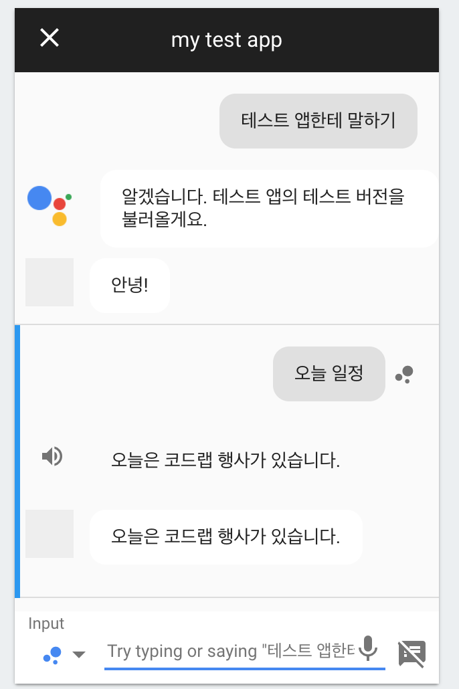 |
코드랩 진행을 위해 필요한 물품
- 개발을 위한 노트북 (OSX, Windows or Linux)
- 3.5mm 오디오잭과 연결되는 스피커 혹은 이어폰
- USB 마이크 (Android Things Kit과 함께 제공해드립니다.)
- 맥북(신형)을 사용하는 경우 USB-A 사용 및 전원 공급을 위한 USB 허브
- 여러분만의 재미있는 챗봇 아이디어
개발 노트북에는 다음과 같은 개발 도구가 설치되어야 합니다.
- Android Studio 3.0 이상 버전 및 Android 7.0 이상 SDK와 SDK 도구
- Node.js
- Firebase CLI
- Python 3
구성품 확인
Android Things Pico Pro Maker Kit 박스를 열고 다음 부품이 포함되어 있는지 확인합니다. 참고로 코드랩에 사용되는 키트에는 레인보우 햇 관련 부품(2, 3)은 포함되어 있지 않습니다.
(1) Pico i.MX7Dual 보드 (4) USB-C 케이블 (5) Wifi 안테나 (6) 안테나 연장 케이블 (9) 5" 멀티터치 디스플레이 (10) 디스플레이 연결 케이블 | 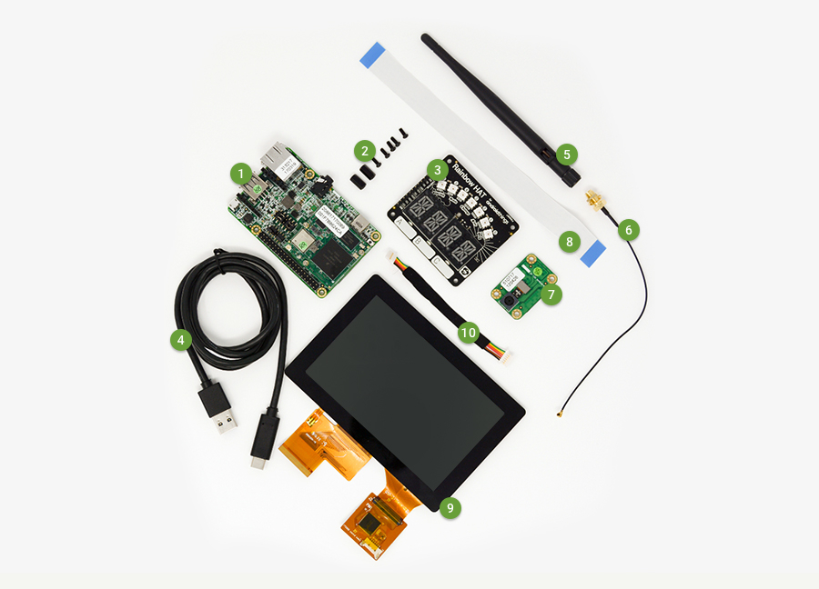 |
Wifi 안테나 연결하기
① 안테나 연장 케이블을 Wifi 안테나에 연결 합니다.
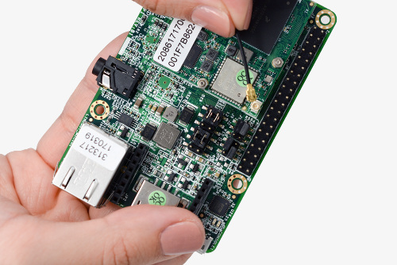
② 안테나 연장 케이블 한 쪽 끝의 동그란 안테나 핀을 개발 보드 단자에 연결합니다. 단자 위치는 위 사진을 참고하세요. 구멍과 잘 맞게 안테나 단자를 위치시킨 후 ‘딸깍' 소리가 날 때까지 힘을 줘 누릅니다.
멀티터치 디스플레이 연결하기
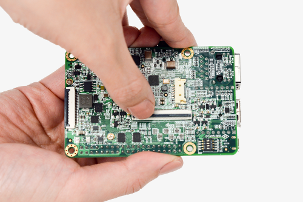
① 개발 보드를 뒤집습니다. 위 사진을 참조하여 보드 중간의 흰색 단자 위치를 확인합니다. 흰색 단자 끝부분의 검은색 클립을 위로 젖혀 세웁니다.
② 멀티터치 디스플레이를 뒤집습니다. 위 사진을 참조하여 평평한 리본 케이블을 확인합니다. 케이블 고정을 위해 테이프가 붙어 있는 경우 조심스럽게 테이프를 제거합니다. 리본 케이블을 흰색 단자에 꽂고, 검은색 클립을 아래로 내려 고정합니다. 케이블이 잘 고정되었는지 확인합니다.
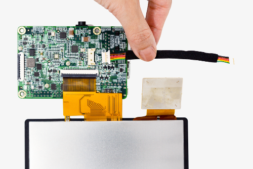
③ 디스플레이 연결을 위해 6선 케이블을 사용합니다. 위 사진처럼 개발 보드 상단의 단자에 케이블을 연결 합니다. 케이블은 앞면과 뒷면이 있으며 한쪽 방향으로만 연결됩니다. 케이블의 금색 부분이 위를 향한 상태로 연결되어야 합니다.
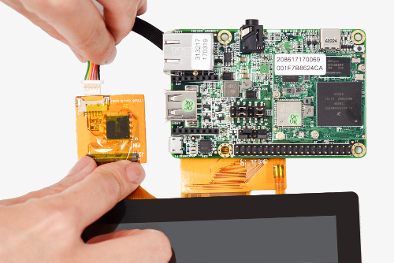
④ 개발보드와 디스플레이를 뒤집습니다. 6선 케이블의 다른 쪽 끝을 디스플레이와 연결합니다. 연결을 위해 케이블을 조금 꼬아야 할 수 있습니다.
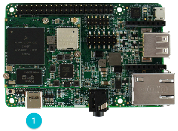
동봉된 USB-C to USB-A 케이블을 이용해 개발보드와 노트북을 연결합니다. 위 그림의 1번 단자에 USB-C 케이블을 연결합니다. 반대쪽 USB-A 케이블은 노트북에 연결됩니다.
다음으로 Android 시스템 이미지를 다운로드해 개발보드에 설치합니다.
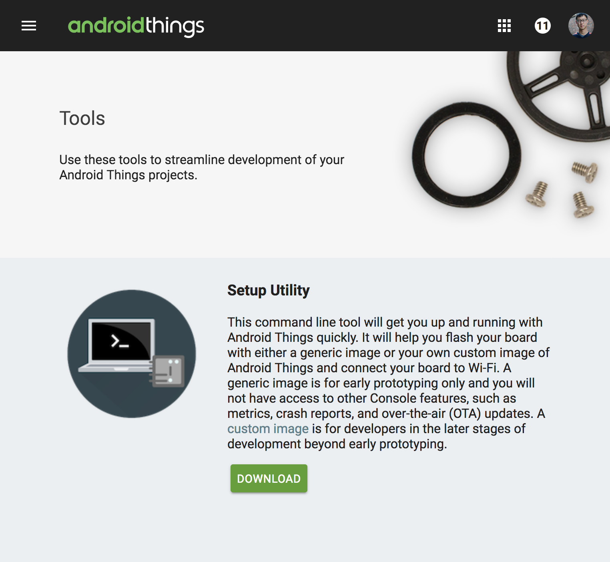
1. Android Things Console에 접속합니다.
2. 화면 왼쪽 상단의 햄버거 버튼을 클릭해 메뉴바를 열고 Tools 메뉴를 선택합니다. DOWNLOAD 버튼을 눌러 Setup Utility를 다운로드 합니다.
3. 압축 파일을 풀고 Setup Utility를 실행합니다.
- Windows의 경우, 실행 파일(
android-things-setup-utility-windows.exe)을 더블클릭합니다. - Mac 혹은 Linux의 경우, 터미널에서 직접 유틸리티를 실행할 수 있습니다.
# Mac $ ~/Downloads/android-things-setup-utility/android-things-setup-utility-macos # Linux $ ~/Downloads/android-things-setup-utility/android-things-setup-utility-linux
4. 터미널에 시스템 이미지 설치 관련 메뉴가 표시됩니다. ‘Install Android Things and optionally set up Wi-Fi' 옵션을 선택합니다.
What do you want to do? 1 - Install Android Things and optionally set up Wi-Fi 2 - Set up Wi-Fi on an existing Android Things device
5. 하드웨어를 선택하라는 메뉴가 표시되면 ‘NXP Pico i.MX7D'를 선택합니다.
What hardware are you using? 1 - Raspberry Pi 3 2 - NXP Pico i.MX7D 3 - NXP Pico i.MX6UL
6. 하드웨어에 사용할 이미지를 선택하는 메뉴가 표시됩니다. ‘Default image'를 선택하면 해당 이미지를 다운로드하기 시작합니다.
Do you want to use the default image or a custom image? 1 - Default image: Used for development purposes. No access to the Android Things Console features such as metrics, crash reports, and OTA updates. 2 - Custom image: Provide your own image, enter the path to an image generated and from the Android Things Console.
7. 이미지 다운로드가 완료되면 다음과 같이 기기를 컴퓨터에 연결하라는 메시지가 표시됩니다. 앞의 절차에서 이미 컴퓨터와 기기를 연결하였으므로, 엔터 키를 눌러 설치를 진행합니다. 설치가 완료되기까지 약 5분까지 소요될 수 있습니다.
Connect your device to this computer: The USB cable should plug into your board's USB-C port. If your computer also has USB-C ports like the more recent MacBooks, you will need to use a USB hub. Otherwise the board won't power on correctly. Once connected, press [Enter] to install Android Things on the device...
8. 설치가 완료되면 다음과 같이 Wi-Fi 네트워크를 설정하는 메뉴가 표시됩니다. Android Things가 부팅된 후 UI를 통해 직접 설정할 것이므로 ‘n'을 눌러 이 절차를 건너뜁니다.
Successfully flashed your imx7d. Successfully flashed Android Things... Would you like to set up Wi-Fi on this device? (y/n)
9. Android Things 부팅이 완료되면 다음과 같은 화면이 표시됩니다.
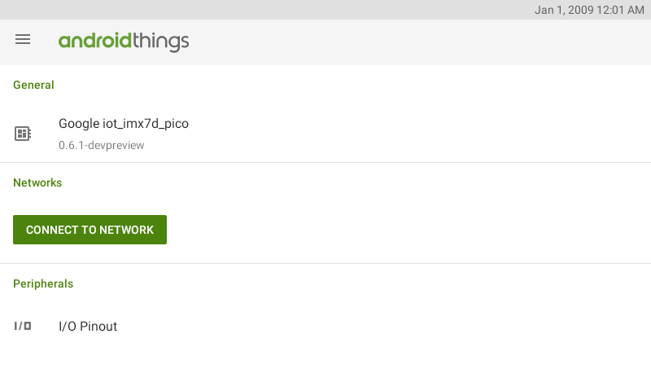
10. ‘CONNECT TO NETWORK' 메뉴에서 Wi-Fi 기능을 켠 후 무선 네트워크를 설정합니다. Wi-Fi를 켠 후 ‘GoogleGuest' 혹은 ‘GoogleGuest-Legacy' SSID로 접속합니다 별도의 비밀번호는 없습니다.
Android Studio 3.0 이상 버전과 최신 Android SDK를 사용해 Android Things용 애플리케이션을 개발할 수 있습니다. 기존 Android 앱 개발 경험을 그대로 활용할 수 있습니다.
Android Things 프로젝트 생성
1. Android Studio에서 ‘File > New > New Project' 메뉴를 선택해 새로운 프로젝트를 생성합니다.
2. Target Android Device 설정 화면에서 아래와 같이 Android Things를 선택합니다.
- 최소 API Level은 25 (7.1.1 Nougat)으로 선택합니다.
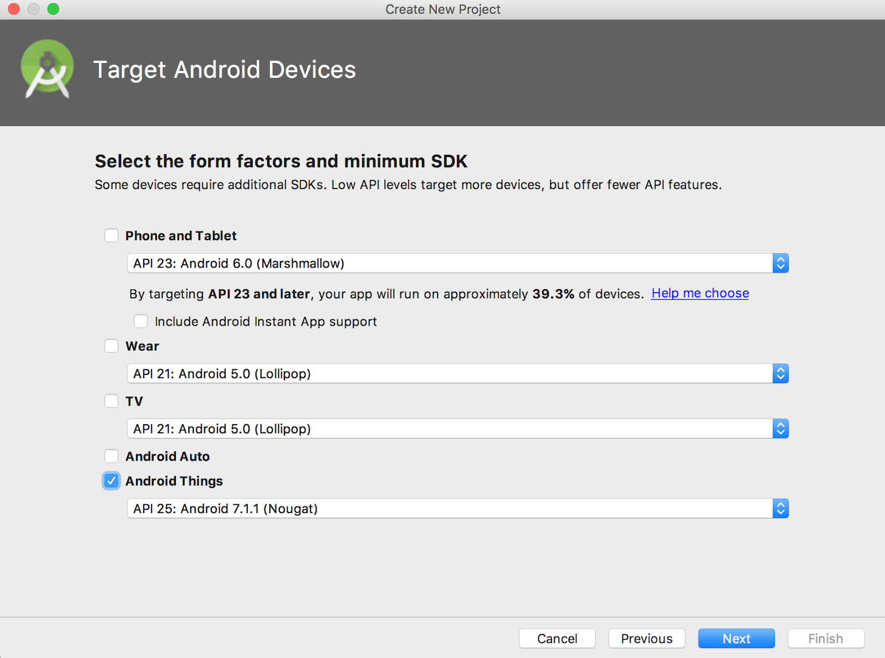
3. ‘Android Things Empty Activity'를 선택하고 프로젝트를 생성합니다. 생성된 프로젝트는 메니페스트 파일, 리소스, 엑티비티등 일반적인 Android 앱과 동일한 구성요소로 이루어집니다.
4. 프로젝트를 빌드 한 후 실행합니다. 아래와 같은 IOT_LAUNCHER 인텐트에 응답하는 앱은 하나 밖에 설치될 수 없다는 경고창이 표시될 수 있습니다. ‘OK' 버튼을 눌러 기존 앱을 삭제하고 샘플 앱을 설치합니다.
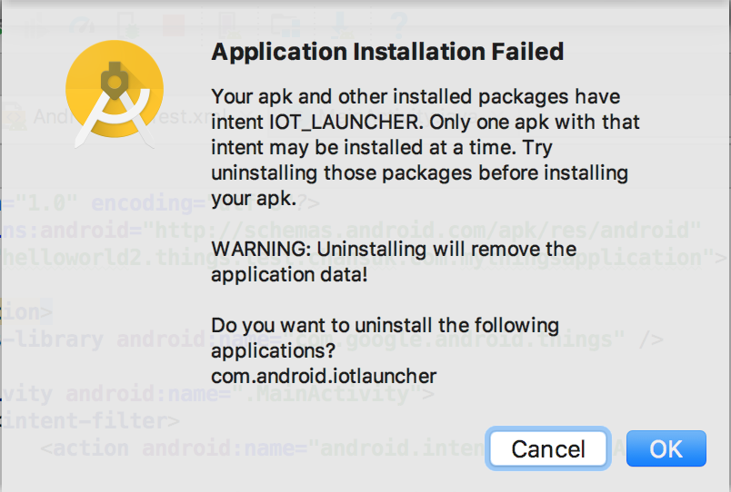
5. 다음과 같이 Android Things 위에서 Hello World 앱이 실행됩니다..이제 Android Things 앱 개발을 위한 환경이 구성되었습니다.
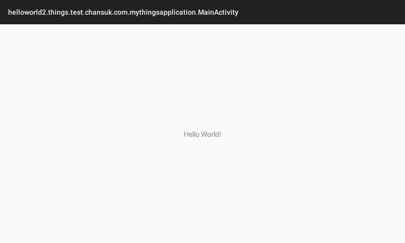
개발자는 Google 어시스턴트 서비스를 통해 자신의 디바이스 혹은 앱에 Google 어시스턴트 기능을 통합할 수 있습니다. Android Things를 비롯하여 다양한 환경에서 Google 어시스턴트 서비스를 설치한 후 제공되는 엔드 포인트로 사용자 요청을 스트리밍 하면 Google 어시스턴트에서 보내는 응답을 수신할 수 있습니다.
이번 코드랩 단계에서는 앞서 설정한 Android Things 위에 Google 어시스턴트 서비스를 포함하고 있는 샘플 앱을 설치해봅니다. 아래 링크를 클릭해 샘플 코드를 내려받을 있습니다.
혹은 샘플 코드 저장소에서 직접 코드를 내려받을 수 있습니다.
$ git clone https://github.com/androidthings/sample-googleassistant.git
압축파일을 풀고, Android Studio에서 ‘New > Import Project' 메뉴를 통해 샘플 프로젝트를 불러옵니다. 프로젝트를 빌드하면 다음과 같이 credential 리소스를 찾을 수 없다는 오류가 발생합니다.
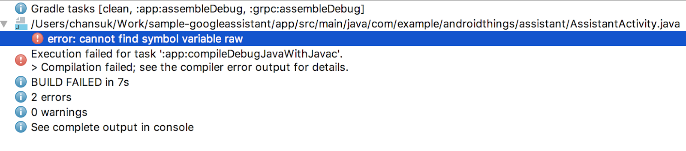
겁먹지 마세요. 다음 단계에서 몇 가지 추가적인 설정을 완료하면 Google 어시스턴트 서비스를 사용 할 수 있습니다.
오디오 / 마이크 설정
사용자 음성 요청을 듣고 Google 어시스턴트 응답을 재생하기 위해 마이크와 스피커가 필요합니다. Android Thing 개발 보드와 함께 배부된 USB 마이크를 USB-A 단자에 연결하고, 이어폰은 3.5mm 오디오 잭에 연결합니다.
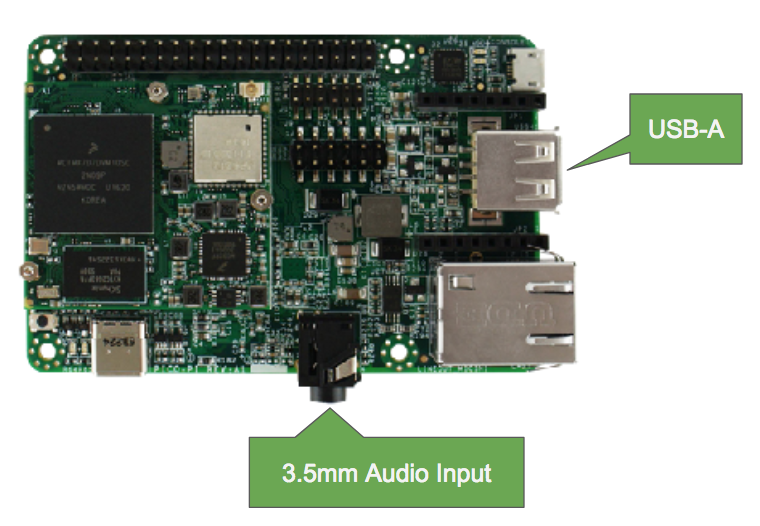
연결된 마이크 / 스피커를 올바르게 인식할 수 있도록, 샘플 코드의 AssistantActivity.java에서 Audio 디바이스를 설정 하는 부분을 다음과 같이 수정합니다.
수정 전:
// Audio routing configuration: use default routing.
AudioDeviceInfo audioInputDevice = null;
AudioDeviceInfo audioOutputDevice = null;수정 후:
// Audio routing configuration: use default routing.
AudioDeviceInfo audioInputDevice = findAudioDevice(AudioManager.GET_DEVICES_INPUTS,
AudioDeviceInfo.TYPE_USB_DEVICE);
AudioDeviceInfo audioOutputDevice = findAudioDevice(AudioManager.GET_DEVICES_OUTPUTS,
AudioDeviceInfo.TYPE_BUILTIN_SPEAKER);추가로 코드의 일부분을 주석처리 합니다. 다운로드 받은 샘플 코드는 하드웨어(Rainbow HAT) 사용을 전제로 작성되어있습니다. 이번 코드랩에서는 해당 하드웨어를 사용하지 않기 때문에, Rainbow HAT 사용에 관련된 다음 코드를 주석 처리합니다.
수정 전:
.setConversationCallback(new ConversationCallback() {
@Override
public void onAudioSample(ByteBuffer audioSample) {
if (mLed != null) {
try {
mDac.setSdMode(Max98357A.SD_MODE_SHUTDOWN);
mLed.setValue(false);
} catch (IOException e) {
Log.e(TAG, "error disabling DAC", e);
}
}
}수정 후:
.setConversationCallback(new ConversationCallback() {
@Override
public void onAudioSample(ByteBuffer audioSample) {
if (mLed != null) {
// try {
// mDac.setSdMode(Max98357A.SD_MODE_SHUTDOWN);
// mLed.setValue(false);
// } catch (IOException e) {
// Log.e(TAG, "error disabling DAC", e);
// }
}
}Credential 구성하기
Google 어시스턴트는 개인화된 서비스를 제공하며 사용자 인증 과정이 꼭 필요합니다. 사용자 인증을 위해 샘플앱에 포함할 credential 리소스를 생성해봅니다. 몇 가지 단계를 거쳐야합니다.
1. 사용자 계정의 어시스턴트 기능 활성화를 위해 Google 활동 제어 페이지로 이동하여 다음 활동을 허용 합니다. Google 로그인이 필요합니다.
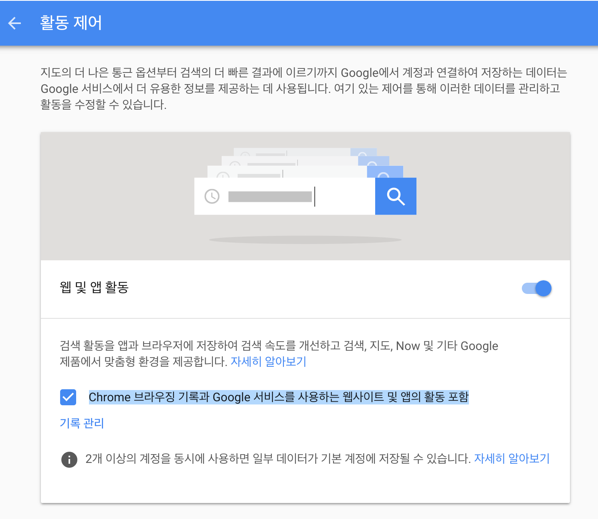 |
|
2. Google Cloud Platform 콘솔에서 Assistant API 기능을 활성화합니다. Cloud 콘솔로 이동하여 새로운 프로젝트를 생성합니다. 이어지는 코드랩 단계에서 Assistant API 기능이 활성화된 Cloud 프로젝트를 이어서 사용하게 됩니다. 프로젝트 이름과 ID를 잘 기억해두면 좋습니다.
API 대시보드로 이동하여 ‘API 사용 및 설정' 버튼을 클릭한 후 API 라이브러리 검색 창에서 ‘Google Assistant API' 를 검색 합니다. ‘사용 설정' 버튼을 클릭하여 API 기능을 활성화합니다.
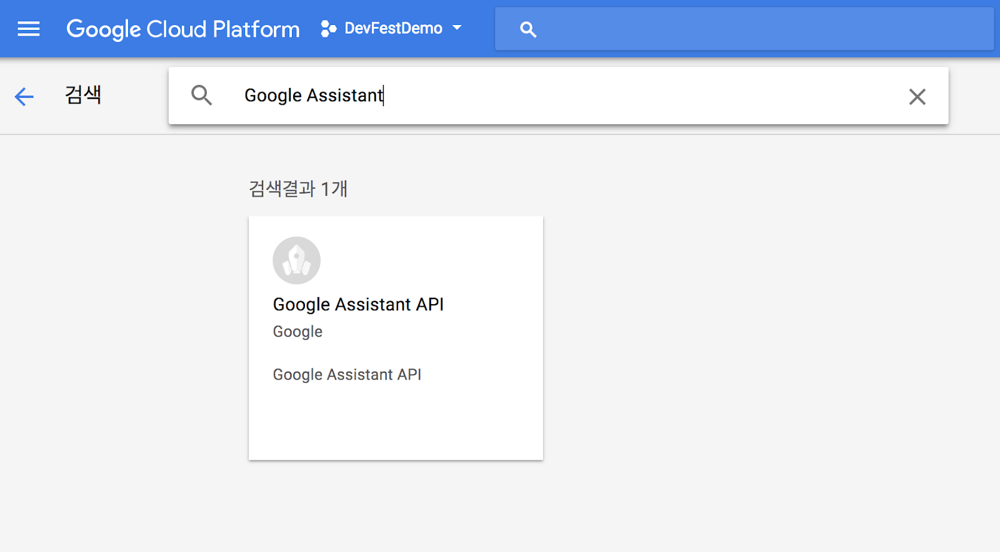
3. 사용자 인증 정보를 위해 새로운 OAuth Client ID를 생성합니다.
- 애플리케이션 유형에서 기타를 선택합니다.
- 이름 항목에는 원하는 이름을 입력합니다.
4. 생성된 OAuth Client ID 정보가 목록에 표시됩니다. 화면 오른쪽의 ⬇ 버튼을 클릭하여 Client Secret JSON 파일을 다운로드 합니다. (client_secret_NNNN.json 혹은 client_id.json)
Credential 생성하기
1. 개발 노트북 상에서 Python3 를 설치합니다. 코드랩은 파이선 3.6.4 버전 기반으로 테스트되었습니다. 윈도우의 경우 설치 화면에서 ‘Add Python 3.6' 옵션을 체크한 후 설치하면 이 후 코드랩 진행이 더 수월합니다.
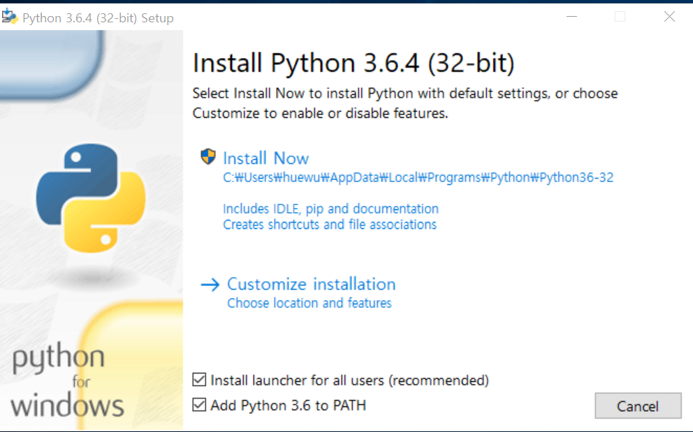
설치가 완료되면 터미널 혹은 쉘을 열고 파이썬 가상 환경을 시작합니다.
On Mac:
python3 -m venv env
On Windows:
python -m venv env
다음으로 아래 명령어를 실행해 google-oauthlib-tool을 설치합니다.
On Mac:
env/bin/python -m pip install --upgrade pip setuptools env/bin/pip install --upgrade google-auth-oauthlib[tool]
On Windows:
env\Scripts\python -m pip install --upgrade pip setuptools env\Scripts\pip install --upgrade google-auth-oauthlib[tool]
2. google-oauthlib-tool을 이용해 credentials.json 파일을 생성합니다. 아래 명령어를 참고하세요. 이 때 /path/to/client_secret_client-id.json 부분에는 앞서 내려받은 client_secret_NNNN.json 파일을 지정합니다.
On Mac:
env/bin/google-oauthlib-tool \
--scope https://www.googleapis.com/auth/assistant-sdk-prototype \
--save --headless \
--client-secrets /path/to/client_secret_client-id.json
On Windows:
env\Scripts\google-oauthlib-tool ^
--scope https://www.googleapis.com/auth/assistant-sdk-prototype ^
--save --headless ^
--client-secrets \path\to\client_secret_client-id.json
명령이 정상적으로 수행되면 아래와 같이 URL이 표시됩니다. 오류가 발생하는 경우 다운로드 받은 json 파일 경로를 올바르게 지정했는지 확인해봅니다.
Please visit this URL to authorize this application: https://...
3. URL을 복사해 브라우저에서 페이지를 엽니다. 이전 단계에서 프로젝트를 생성할 때 사용한 Google 계정으로 로그인합니다.
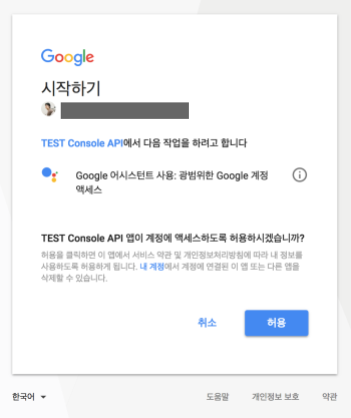
4. 앱 권한을 요청하는 팝업이 표시됩니다. ‘허용' 버튼을 클릭해 권한을 부여합니다. 권한을 부여하면 새로운 페이지가 열리고 4/XXXX와 같은 인증 코드가 표시됩니다. 인증 코드를 복사해 터미널에 입력합니다.
Enter the authorization code:
인증이 정상적으로 완료되면 터미널에 다음과 같은 메세지가 출력됩니다.
credentials saved: /path/to/.config/google-oauthlib-tool/credentials.json
만일 잘못된 인증 코드를 입력하는 경우 InvalidGrantError 등의 오류가 발생할 수 있습니다. 코드 전체를 복사해넣어야합니다.
샘플 코드 실행하기
샘플 앱을 실행하기 위한 credentials 리소스가 생성되었습니다. 앞서 내려받은 샘플 프로젝트에 raw 타입의 리소스를 저장하기 위한 리소스 폴더를 만들고, 앞서 생성한 credentials.json 파일을 복사해 넣습니다. 샘플 프로젝트가 정상적으로 빌드되는지 확인합니다.
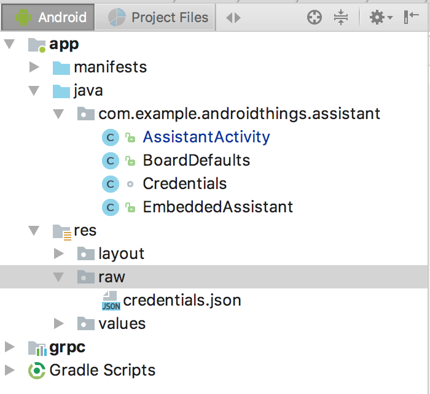
리소스 파일이 정상적으로 추가되었다면, 오류없이 앱이 빌드됩니다. 이제 몇 가지 설정만 완료하면 앱을 실행할 수 있습니다 : )
디바이스 등록
우선 Google 어시스턴트에 디바이스 정보를 등록해야합니다. 디바이스 정보에는 고유 식별자, 디바이스 종류, 제조사 정보 등등이 포함될 수 있습니다. 해당 정보는 Google 어시스턴트와 여러분의 디바이스에 연동된 Google Cloud Project에서만 사용됩니다.
디바이스 등록은 샘플 프로젝트에 포함된 googlesamples-assistant-devicetool 도구를 사용합니다. 이전 Credentials 파일을 만들 때와 마찬가지로, 아래와 같이 파이썬 가상 환경 하에서 google-assistant-sdk[samples]을 설치합니다.
On Mac:
python3 -m venv env env/bin/python -m pip install --upgrade google-assistant-sdk[samples]
On Windows:
python -m venv env env\Scripts\python -m pip install --upgrade google-assistant-sdk[samples]
다음 아래와 같은 명령으로 디바이스를 등록합니다. 이 때 project_id는 앞 서 Google Assistant API 사용을 위해 연결한 Google Cloud Project Id를 사용합니다. 프로젝트 ID는 Google Cloud Platform 콘솔의 리소스 관리 페이지에 접속해 프로젝트 이름과 함께 표시되는 프로젝트 ID를 통해 확인할 수 있습니다.model_id는 고유한 식별자 값이 사용되어야합니다. 다른 개발자가 사용중인 식별자와 겹치지 않도록 project_id 값을 포함한 값으로 원하는 값을 만들어 사용하시는 것을 권장드립니다.
On Mac:
env/bin/googlesamples-assistant-devicetool \
--project-id project_id register-model \
--manufacturer "Assistant SDK developer" \
--product-name "Assistant SDK light" \
--type LIGHT \
--model model_id
On Windows:
env\Scripts\googlesamples-assistant-devicetool ^
--project-id project_id register-model ^
--manufacturer "Assistant SDK developer" ^
--product-name "Assistant SDK light" ^
--type LIGHT ^
--model model_id
디바이스가 정상적으로 등록되었는지 확인하기 위해 list 명령어를 사용할 수 있습니다.
On Mac:
env/bin/googlesamples-assistant-devicetool --project-id project_id list --model
On Windows:
env\Scripts\googlesamples-assistant-devicetool --project-id project_id list --model
디바이스가 정상적으로 등록된 경우 다음과 같이 디바이스 목록이 표시됩니다.
>
Device Model Id: xxxxxx
Project Id: xxxxxx
Device Type: action.devices.types.LIGHT
No traits
DeviceConfig
다음으로 앞서 등록한 고유 식별자 및 사용 언어를 설정합니다. AssistantActivity.java 코드 내에서 EmbeddedAssistant.Builder를 통해 EmbeddedAssistant 객체를 생성하는 부분을 찾습니다. 아래 주석 및 코드 내용을 참고해 어시스턴트 언어를 한국어로 설정하고, 앞서 등록한 model_id를 등록하고, 해당 디바이스를 식별할 수 있는 임의의 InstanceId 값을 설정하도록 코드를 수정합니다.
mEmbeddedAssistant = new EmbeddedAssistant.Builder()
.setCredentials(userCredentials)
.setAudioInputDevice(audioInputDevice)
.setAudioOutputDevice(audioOutputDevice)
.setAudioSampleRate(SAMPLE_RATE)
.setAudioVolume(initVolume)
// add language code as Korean
.setLanguageCode("ko-KR")
// set device Model Id which is registered via the device register tool
.setDeviceModelId("model id")
// set device Instance Id (any your project scope unique value is allowed)
.setDeviceInstanceId("instance id")
.setRequestCallback(new RequestCallback() {
...Google 어시스턴트를 불러보세요.
드디어 Android Things 위에서 Google 어시스턴트를 사용하기 위한 모든 준비가 완료되었습니다. 샘플 프로젝트를 빌드하고 실행합니다.
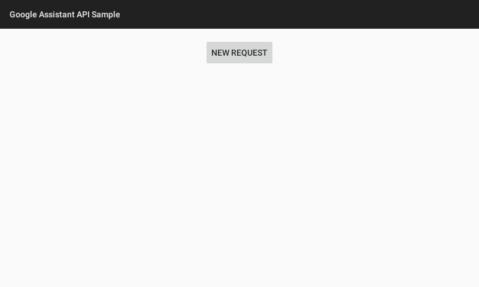
사용자 음성 입력을 받기 위한 ‘NEW REQUEST' 버튼이 하나 있는 허전한 Activity가 표시됩니다. 화면의 ‘New Request' 버튼을 클릭한 후 ‘지금 몇시야' 혹은 ‘너 이름은 뭐니?' 라고 말해보세요.
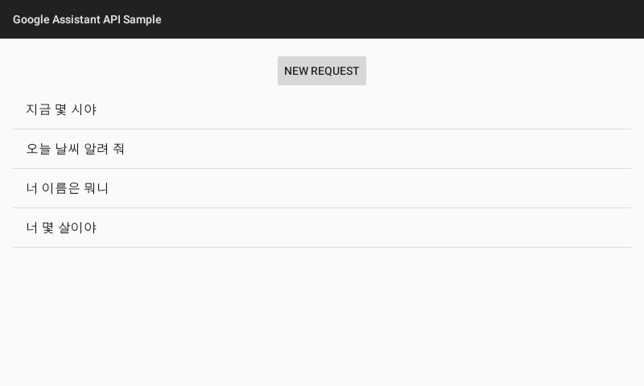
이어폰에 귀를 기울이세요. 감동적인 Google 어시스턴트 음성을 감상할 수 있습니다. 축하합니다. 여러분만의 Google 어시스턴트 빌트인 스피커 제작이 완료되었습니다!
첫 번째 코드랩 세션을 무사히 마무리하셨습니다!!
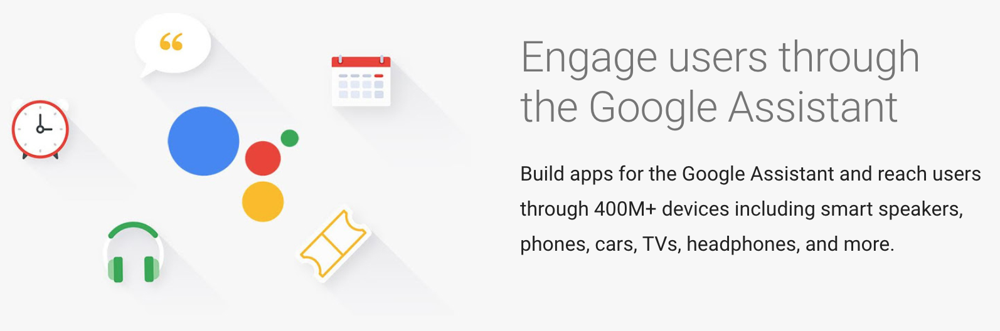
시작하기 전에
다시 한번 무엇을 만들게 되나요?
- Actions on Google 앱을 만듭니다. 챗봇하고 좀 비슷합니다.
- 백엔드는 Firebase 용 Cloud 함수로 만듭니다. 외부 데이터가 필요한 경우 Firestore를 활용합니다.
- 대화 로직은 Dialogflow로 작성합니다.
- 만들어진 앱은 Google 어시스턴트 에뮬레이터와 Android Things 디바이스에서 사용할 수 있습니다.
그런데 Actions on Google은 뭔가요?
개발자가 Google 어시스턴트 위에서 동작하는 앱을 만들 수 있는 플랫폼 입니다. 개발자는 Actions이라는 형태로 기능을 정의 및 구현한 후 Actions on Google(AoG) 콘솔에 등록할 수 있습니다. 이 후 사용자는 어시스턴트 위에서 AoG 앱을 불러오고 다양한 Actions을 수행할 수 있습니다.
어시스턴트를 위한 앱은 기존 모바일 앱과 다르게 대화형 UX를 통해 사용자와 상호작용합니다. 이는 음성만을 말하는 것은 아니며, Google 어시스턴트가 동작하는 환경에 따라 음성 뿐만 아니라 이미지, 텍스트, 동영상등 다양한 요소를 포함할 수 있습니다.
AoG를 사용해 어시스턴트 앱을 만드는 것은 일반적인 매시업과 유사합니다. Google 어시스턴트 연동을 위한 Webhook 포맷이 정의되어 있고, 쉽게 사용할 수 있는 Node.js 클라이언트 라이브러리가 제공됩니다. 빠른 개발을 위해 챗봇 빌더 솔루션인 Dialogflow와 쉽게 연동할 수 있는 기능도 함께 제공하고 있습니다.
어시스턴트 앱은 다음과 같은 과정으로 동작합니다.
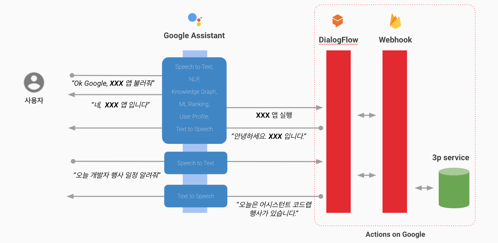
- AoG 콘솔에 자신의 앱 및 액션을 등록합니다.
- 사용자 요청을 전달받을 수 있는 서버를 만듭니다. 해당 서버 URL을 Webhook 형태로 등록합니다. 사용자가 Google 어시스턴트를 통해 앱을 호출하면 해당 서버로 요청이 전송됩니다.
- 제공되는 클라이언트 라이브러리를 이용해 사용자 요청을 파싱해 필요한 데이터를 확인합니다.
- 사용자 요청에 응답하기 위해 필요한 추가 작업 (예를 들어 외부 데이터 소스에서 날씨 정보 확인 등)을 수행합니다.
- 제공되는 클라이언트 라이브러리를 이용해 정해진 포맷으로 응답 메세지를 구성해 AoG 요청에 응답합니다.
이어지는 코드랩에서는 Actions on Google 플랫폼 위에서 Dialogflow와 Firebase 용 Cloud 함수 기능을 활용해 위에 서술한 방식으로 동작하는 간단한 어시스턴트 앱을 만들어 봅니다.
가장 먼저 Actions on Google 프로젝트를 생성해봅니다. Actions on Google Console에 접속합니다.
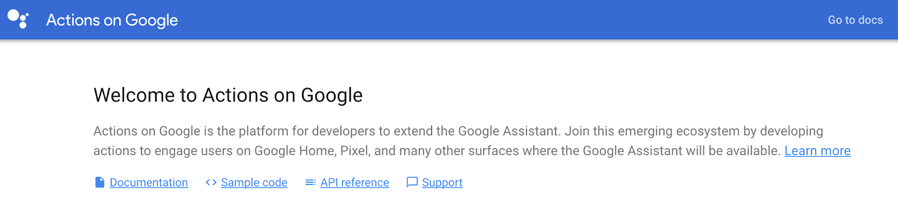
Add/Import project 카드를 선택해 새로운 프로젝트를 생성합니다. 아래와 같이 원하는 {Project Name}을 지정하고 국가는 South Korea로 설정 후 프로젝트를 생성합니다.
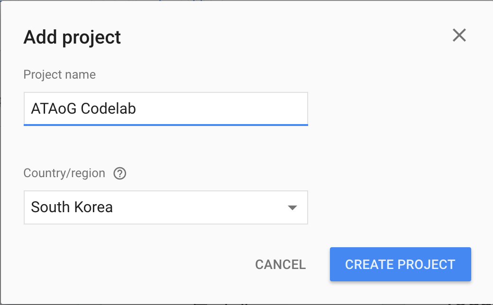
프로젝트를 최초로 생성하면 다음과 같이 어시스턴트 앱의 기본 정보를 입력하는 화면이 표시됩니다. 어시스턴트 앱이 동작하는 방법을 설정하기 위해 ‘ADD ACTIONS' 버튼을 클릭합니다.
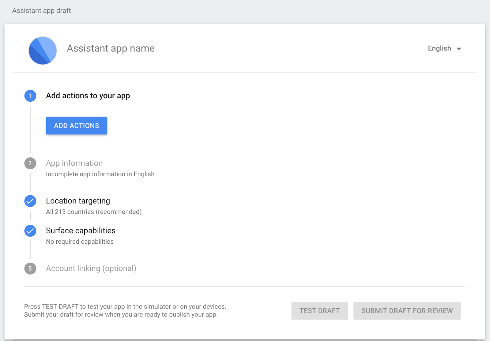
어시스턴트 앱은 개발자의 선호 혹은 필요에 따라 다양한 방법으로 만들 수 있습니다. 이번 코드랩에서는 Dialogflow를 사용해 어시스턴트 앱을 만들 예정입니다. Dialogflow를 정보 카드의 Build 버튼을 클릭합니다.
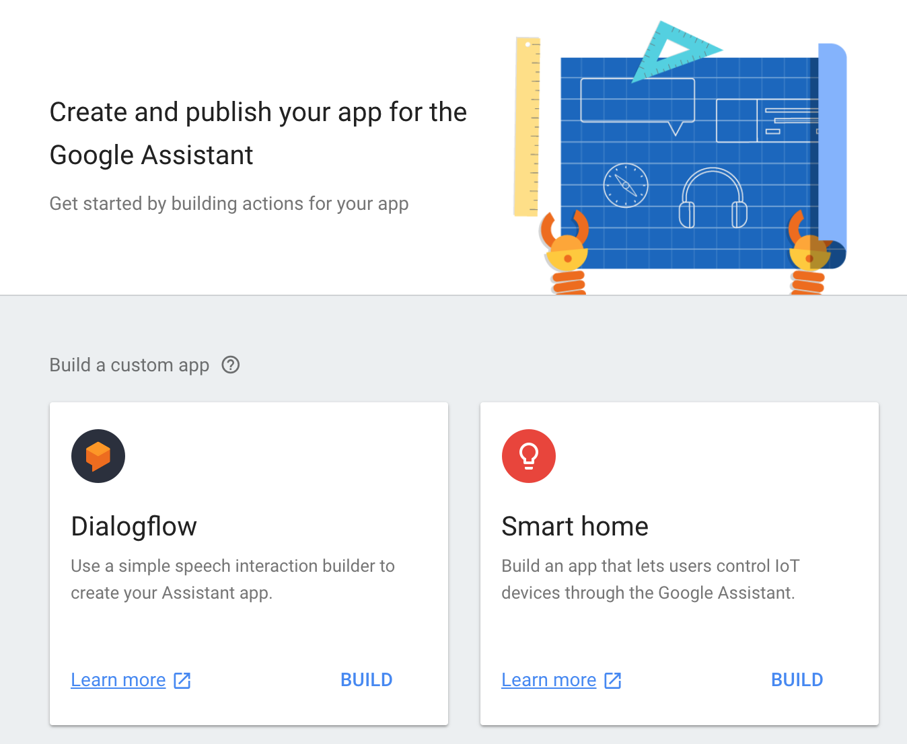
방금전에 생성한 AoG 프로젝트와 연동되는 Dialogflow 프로젝트가 자동 구성됩니다. 다음과 같은 설정을 확인하고 ‘CREATE' 버튼을 클릭해 프로젝트를 생성합니다.
- Default Language: English - en
- Default Time Zone: (GMT+9:00) Aisa/Tokyo
- Dialogflow V2 API: disabled
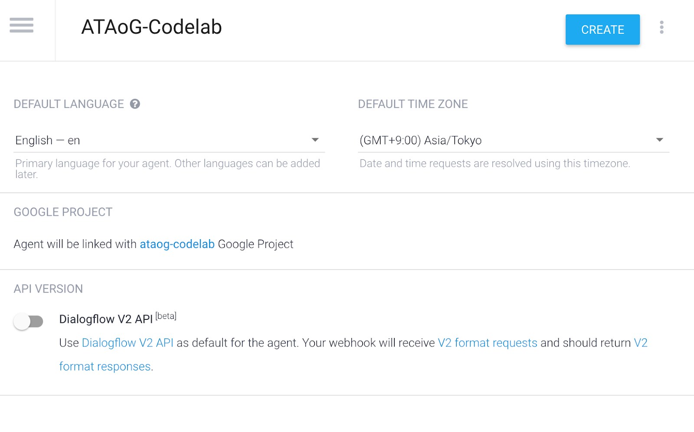
Dialogflow 를 통해 정해진 질문에 정해진 답변을 할 수 있는 챗봇 로직을 만들어봅니다.
첫 번째로 지원 언어에 한국어(ko)를 추가합니다. 왼편 상단의 언어 태그 옆 ‘+' 버튼을 클릭해 지원하는 언어를 추가할 수 있습니다.
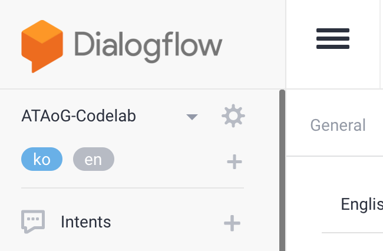
Dialogflow 설정은 각 언어별로 독립적으로 구성되며, 영어 혹은 한국어을 선택한 후, 해당 언어에서 지원하는 액션을 별개로 구성할 수 있습니다. 또한 언제든지 언어 태그를 클릭하여 현재 설정된 언어를 변경 할 수 있습니다.
첫 번째 Intent 만들기
Dialogflow 상에서 간단한 챗봇 로직을 만들어 보도록 하겠습니다. 언어를 한국어(Ko)로 설정한 후, 메뉴의ㄴ‘Intents' 항목을 선택한 후 CREATE INTENT' 버튼을 클릭합니다.
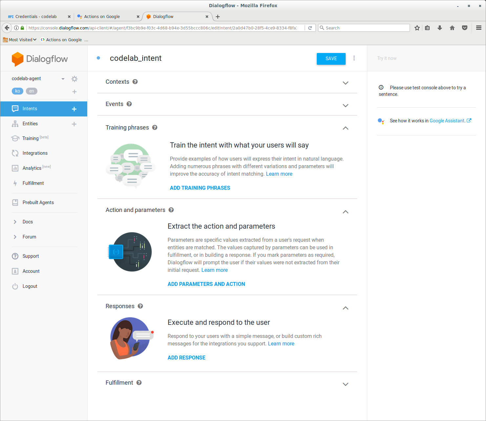
처음 Intent를 생성하는 경우 위와 같은 간단한 온보딩 화면이 여러분을 반겨줍니다. Training phrases 항목에 사용자가 어시스턴트 앱에 요청하는 문장을 입력하고, Responses 부분에 어떻게 사용자에게 응답 할지 설정할 수 있습니다. 그 외 추가적인 내용은 이 후에 코드랩 단계에서 조금 더 자세한 내용을 살펴볼 예정입니다. 혹은 Dialogflow의 개발 문서를 확인해 보셔도 좋습니다.
정해진 질문에 정해진 답변을 하는 대화로직을 만드는 것은 비교적 단순합니다. ‘ADD TRAINING PHRASES' 버튼과 ‘ADD RESPONSE' 버튼을 클릭해 입력창을 열고 다음과 같이 값을 입력한 후 ‘SAVE' 버튼을 클릭합니다.
Training phrases: | 오늘 일정 |
Text response: | 오늘은 코드랩 행사가 있습니다. |
저장이 완료 되면, 화면 오른쪽의 시뮬레이터에서 새롭게 생성한 액션을 바로 시험해 볼 수 있습니다.
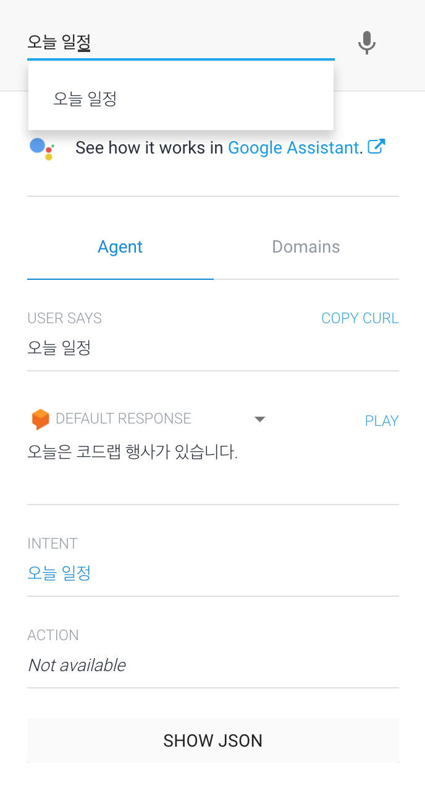
입력 창에 ‘오늘 일정'이라고 입력하면 놀랍게도 ‘오늘은 코드랩 행사가 있습니다.' 라고 응답합니다.
AoG와 Dialogflow 연동
다음으로 만들어본 간단한 챗봇 로직을 AoG와 연동해 Google 어시스턴트 위에서 동작하도록 만들어 봅니다. Dialogflow 메뉴의 Integrations 항목을 선택합니다.
Google Assistant를 선택합니다. 연동을 위해 몇 가지 기본적인 설정을 할 수 있는 팝업 창이 표시됩니다. 빠른 개발을 위해 아래와 같이 ‘Auto-preview changes' 옵션을 활성화 한 후, ‘TEST' 버튼을 클릭합니다.
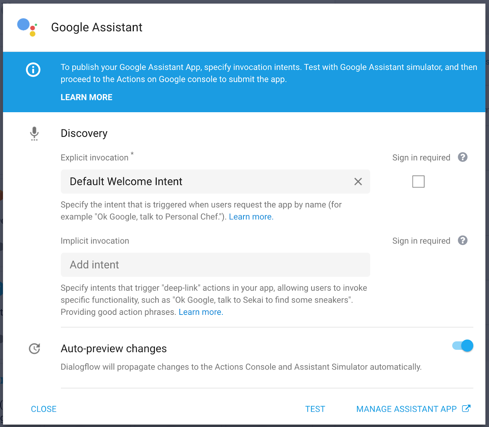
처음에 설정한 AoG 프로젝트의 시뮬레이터 페이지가 열립니다. 시뮬레이터의 언어 설정을 아래와 같이 한국어로 변경합니다.

다음으로 앞서 만든 테스트 앱을 불러 옵니다. 테스트 앱의 이름을 정확히 이야기 하거나 ~~한테 말하기 등의 발화명령을 통해 AoG앱을 시작할 수 있습니다. 현재 Google 어시스턴트는 AoG앱을 호출할 때 다음 네 가지 종류의 발화명령을 지원합니다.
- '~에게 말하기', '~에 말하기', '~한테 말하기', '~에게 연결하기', '~에 연결하기'
테스트 앱이 실행되면, 앞서 ‘오늘 일정' 이라고 말해 앞서 생성한 액션을 실행합니다. 다시 한 번 놀랍게도 다음과 같은 답변을 받을 수 있습니다.
축하합니다!!! 여러분은 성공적으로 Dialogflow로 챗봇 로직을 만들고, 이를 AoG 앱 형태로 만들어 어시스턴트에서 사용할 수 있도록 연동했습니다. AoG 앱은 AoG 콘솔 시뮬레이터, 어시스턴트 기능이 탑재된 안드로이드 단말, 그리고 이전 코드랩에서 만든 Android Things 디바이스에서 모두 사용하실 수 있습니다.
만들어진 앱을 Actions on Google로 정식 출시 하기 위해서는 앱 이름과 설명등 추가 정보를 입력해야합니다. AoG 콘솔의 Overview 메뉴를 클릭한 후, App Information 항목의 ‘Edit' 메뉴를 선택하면 상세 정보를 변경 및 작성 할 수 있습니다.
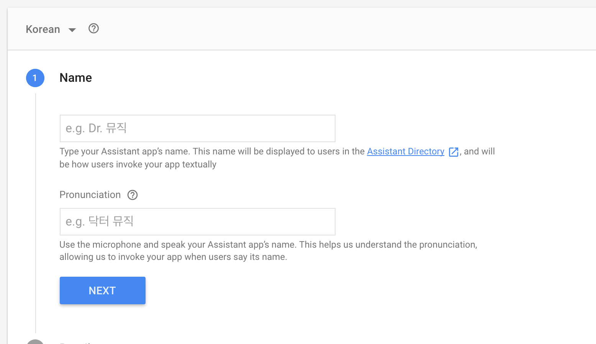
Name 항목에서는 AoG 앱의 이름과 발음 (Pronunciation)을 지정할 수 있습니다. 추가로 Details 항목에서는 사용할 TTS 엔진의 종류와 앱 상세 정보, 사용자가 AoG 앱을 부를 때 사용할 발화 명령(Sample invocations)으로 사용할 수 있는 몇 가지 예시 문장을 추가할 수도 있습니다. 다음으로 Image 항목에서는 사용자가 해당 AoG 앱을 검색했을 때 표시되는 배너 이미지와 챗팅 창에서 표시될 챗 아이콘 이미지를 추가합니다.
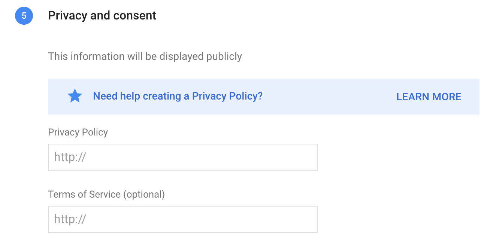
마지막으로 Privacy and consent 메뉴에서는 Privacy Policy 관련 항목에 개인 정보 보호에 관한 정책 내용을 반드시 추가해야합니다. 우선은 이번 코드랩을 위해서는 미리 만들어둔 다음 링크를 활용하실 수 있습니다.
모든 작업이 완료되면 화면 하단의 SAVE 버튼을 클릭합니다. 성공적으로 저장이 완료된 후 다시 한번 AoG 시뮬레이터에서 어시스턴트 앱을 테스트해봅니다. 이제 ‘테스트 앱'이라는 애매모호한 이름이 아닌, 여러분이 지정한 이름으로 AoG 앱을 불러오고 지정한 앱 아이콘도 함께 확인할 수 있습니다.
다시 Dilalogflow 콘솔로 돌아옵니다. 정해진 질문에 정해진 답변을 하는 것에서 더 발전해, 사용자 요청을 처리하기 전에 추가적인 작업을 할 수 있도록 챗봇 로직을 확장합니다. ‘오늘 날씨 어때?' 라는 사용자 요청을 처리할 때, 오늘 날짜를 확인하고, 외부 소스에서 해당 날짜의 날씨 정보를 확인 한 후 사용자에게 응답할 수 있습니다.
Dialogflow에서는 Fulfillment 설정을 통해 이러한 작업을 구성할 수 있습니다. Fulfillment Webhook과 연동되는 백엔드 웹 서비스는 다양한 형태로 만들 수 있습니다. 이번 코드랩에서는 Dialogflow와 쉽게 연동할 수 있는 Firebase 용 Cloud 함수 제품을 사용해 백엔드 웹서비스를 구현합니다.
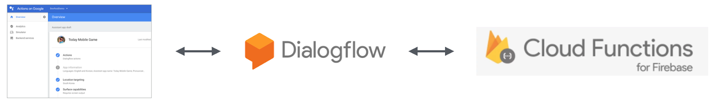
Inline Editor 기능 시작하기
먼저 Inline Editor를 활용하는 방법을 살펴 봅니다. Dialogflow의 Fulfillment 메뉴를 선택합니다. 아래와 같이 Webhook과 Inline Editor 두 가지 옵션이 제공됩니다. 우선 Inline Editor 기능을 확인해봅니다.
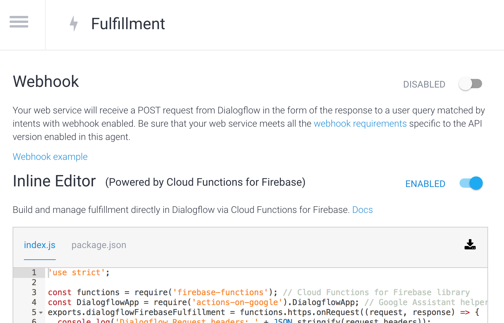
개발자는 Inline Editor에서 직접 사용자 요청을 처리하고 Dialogflow로 응답을 전달하는 node.js 코드를 작성할 수 있습니다. 미리 작성되어있는 탬플릿 코드에는 사용자 요청 처리를 위한 기본 로직 및 firebase-functions과 actions-on-google 라이브러리가 포함되어 있습니다. 코드는 크게 세 가지 부분으로 나누어집니다.
- 요청을 파싱해서 필요한 인자(
action, parameters, etc...)를 파싱하는 부분. - 사용차 요청을 구분하고 이를 처리하기 위한 적절한 로직을 호출하는
actionHandlers를 선언하고 이를 호출하는 부분 - 사용자 응답을 구성할 때 사용할 템플릿과
sendGoogleResponse등의 헬퍼 함수
이번 코드랩에서는 코드 각각의 기능을 자세히 살피기 보다, 전체적인 동작 흐름을 살펴보고 actionHandlers 부분에 새롭게 추가한 ‘오늘 행사' intent를 처리하기 위한 코드를 작성해 추가해봅니다.
Inline Editor 기능을 활성화 한 후 ‘Deploy' 버튼을 클릭합니다. Inline Editor는 Firebase 용 Cloud 함수기반을 동작합니다. 처음 기능을 활성화하면 AoG앱과 연결된 Cloud 프로젝트 내에 Cloud 함수와 Firebase 프로젝트가 자동으로 추가됩니다. 이 후 코드를 추가하거나 수정하는 경우 Firebase로 해당 코드가 배포됩니다. 이 때 약간의 시간이 소요될 수 있습니다.
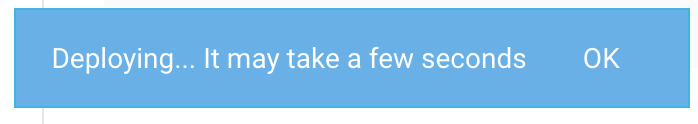
콘솔 화면 오른쪽 하단 토스트 형태로 배포 상태가 표시됩니다. 배포가 완료되면 Intents 메뉴로 이동하고 ‘오늘 일정' Intent를 선택합니다. 아래와 같이 Response 탭 하단에 Fulfillment 관련된 설정이 추가된 것을 확인할 수 있습니다.
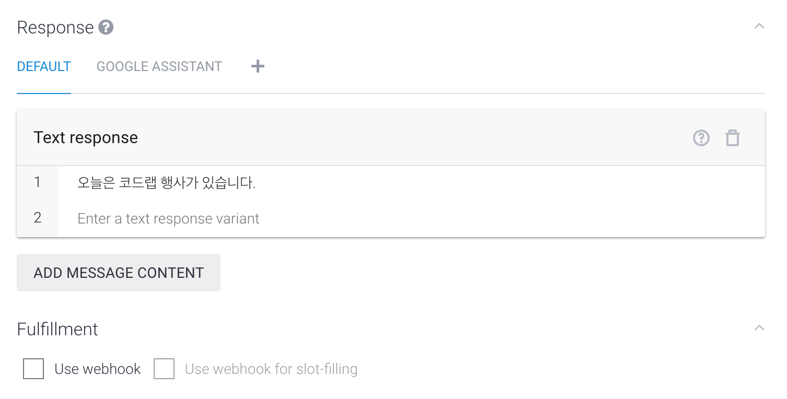
Use webhook 체크박스로 해당 intent를 처리할 때 Fulfillment Webhook 사용 여부를 설정할 수 있습니다. Webhook을 사용하는 것으로 체크박스를 체크합니다. SAVE 버튼을 클릭해 변경 사항을 저장합니다. 변경 사항이 반영되는데 약간의 시간이 소요될 수 있습니다. (업데이트 중에는 왼쪽 메뉴 상단의 프로젝트 이름 옆 기어가 돌아갑니다. 아이콘이 멈출때까지 기다리세요.)
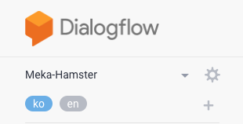
시뮬레이터 상에서 다시 한 번 테스트를 진행합니다. 사용자 요청이 정상적으로 Inline Editor상의 로직으로 전달 되면, 다음과 같이 "This message is from Dialogflow's Cloud Functions for Firebase editor!"라는 응답이 나옵니다.
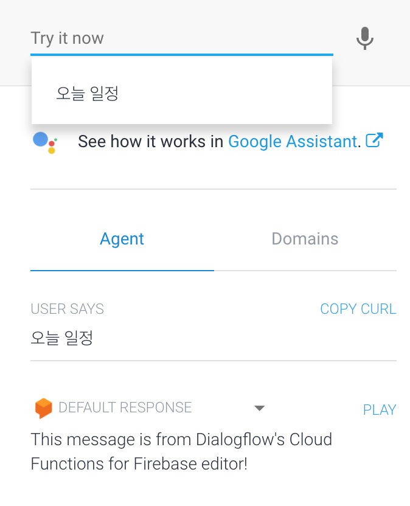
actionHanlders 기능 확장하기
다음으로 intent에 액션명을 추가합니다. 해당 액션명을 기반으로 actionHandlers 상에서 오늘 행사 intent를 구분할 수 있습니다. Intent 메뉴에서 Action 항목을 클릭하면 메뉴가 확장되고 아래와 같이 액션명 입력 창이 표시됩니다.
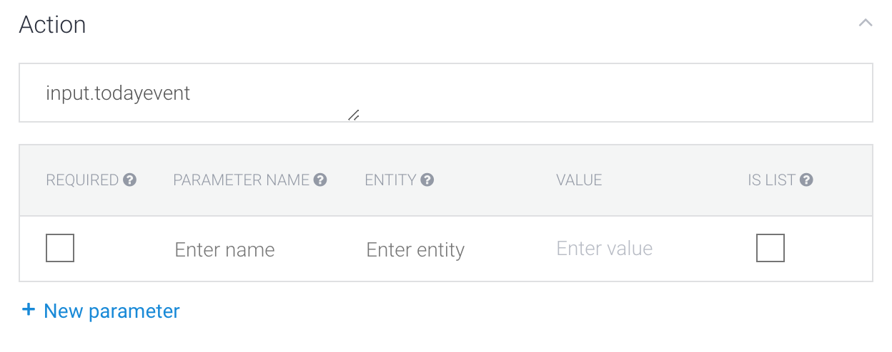
액션명은 다른 액션과 구분되는 값이면 뭐든지 사용할 수 있습니다. 여기서는 기존 코드에 정의된 다른 액션 명명 규칙과 유사하게 input.todayevent 라고 하겠습니다. 변경 사항을 저장하고 다시 Fulfillment 메뉴로 이동합니다.
actionHandlers 코드를 살펴보면, input.welcome, input.unknown등의 액션(intent)를 처리하기 위한 코드를 확인할 수 있습니다. 해당 부분에 아래와 같이 ‘input.todayevent' 이벤트를 처리하기 위한 코드를 추가합니다. 사용자 요청으로 ‘input.todayevent' 액션이 들어오면, "오늘은 코드랩 행사가 있습니다." 라는 간단한 텍스트를 응답하는 코드입니다.
// '오늘 행사' action intent has been matched
'input.todayevent': () => {
if (requestSource === googleAssistantRequest) {
sendGoogleResponse('오늘은 코드랩 행사가 있습니다. from webhook');
} else {
sendResponse('오늘은 코드랩 행사가 있습니다. from webhook');
}
},변경 사항을 저장하고 Deploy 버튼을 클릭한 후 배포가 완료되는 것을 잠시 기다립니다. 배포가 완료된 후 Dialogflow 혹은 AoG 시뮬레이터에서 테스트를 진행합니다. 다음과 같이 "오늘은 코드랩 행사가 있습니다. from webhook" 응답을 확인할 수 있습니다.
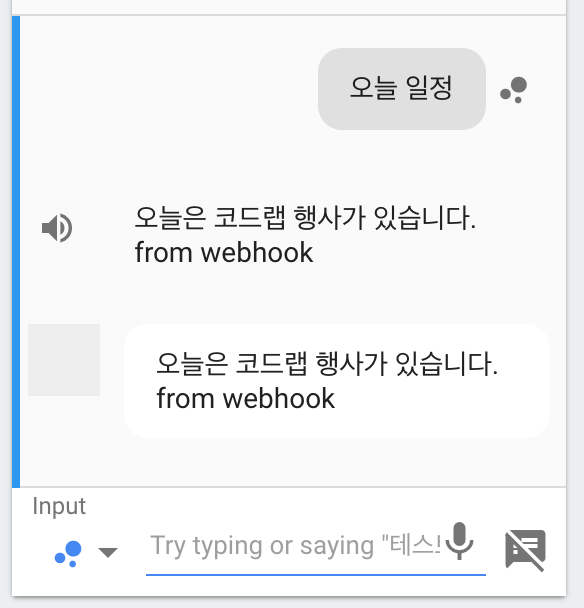
Inline Editor는 fulfillment를 쉽게 테스트해볼 수 있는 좋은 방법입니다. 하지만 처리해야할 사용자의 요청이 많아지고 앱의 기능이 복잡지며 특히 다른 개발자와의 협업이 필요한 경우라면 더 나은 방법이 필요합니다. 이번 코드랩 단계에서는 Inline Editor 대신 Firebase 용 Cloud 함수 기능을 활용해 자신만의 백엔드 웹서비스를 구축하고 Dialogflow webhook으로 이를 연결해보겠습니다.
첫 번째로 Inline Editor로 이동해 오른쪽 상단의 다운로드() 버튼을 클릭해 코드를 다운로드 받습니다.
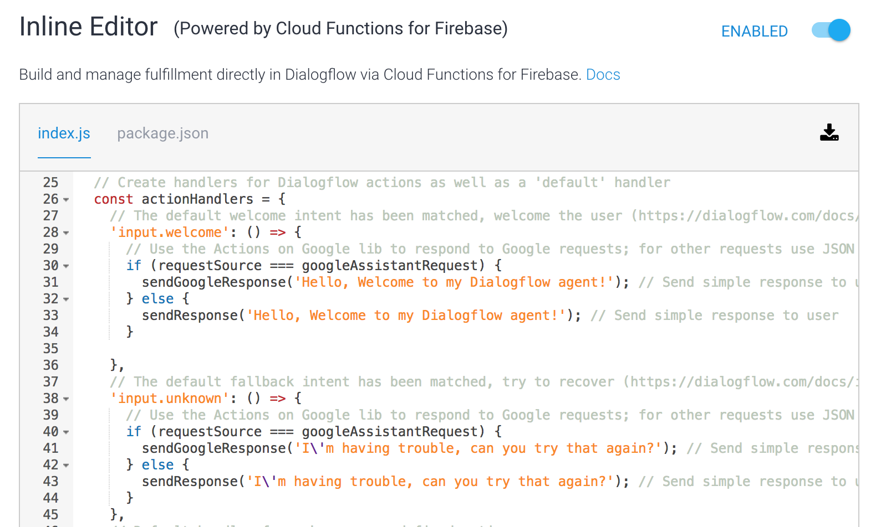
다음으로 Firebase CLI (Command Line Interface) 도구를 사용해 Firebase 용 Cloud 함수 배포 환경을 꾸립니다.
- Firebase CLI 설치가 완료되면, 앞 서 다운로드 받은
"firebaseFulfillment.zip"압축을 풉니다. - 터미널 혹은 쉘을 열고 압축을 푼 파일의
functions폴더로 이동합니다. (예를 들어~/Downloads/firebaseFulfillment/firebase/functions) npm install명령을 실행합니다. function에서 사용되는 dependency가 설치됩니다.firebase login명령을 실행합니다. 앞 서 Cloud 프로젝트에서 사용한 Google 계정을 이용해 로그인 합니다. 이 후 Firebase CLI를 통해 Cloud 및 Firebase 프로젝트를 관리할 수 있습니다.firebase init명령을 실행합니다. 사용할 Firebase 기능을 선택하는 선택지가 출력됩니다. 방향키와 스페이스키를 이용해 다음과 같이 firebase functions와 다음 코드랩 단계에서 사용할 firestore를 선택한 후 Enter키를 입력합니다.
다음으로 현재 CLI 환경과 연결할 firebase 프로젝트를 선택해야합니다. 코드랩 전반부에 생성한 Cloud 프로젝트의 project_id 값을 갖고 있는 프로젝트를 선택합니다. 이 후 각각의 기능 사용에 관한 추가 설정이 필요합니다. Firestore 관련 내용은 Enter 키를 눌러 기본 설정을 활용할 수 있습니다.
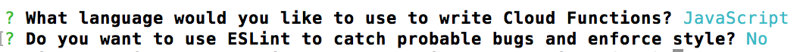
위와 같이 Cloud 함수 쪽 설정 중 사용언어 부분은 JavaScript로 ESLint 사용은 No로 설정합니다. 이어서functions/package.json파일과functions/index.js의 경우 이미 폴더에 포함되어 있는 파일을 그대로 사용합니다. Overwrite 여부를 묻는 경우 No를 선택합니다.
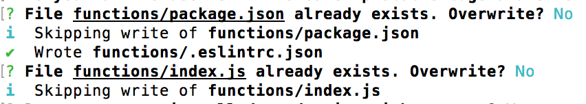
이제, Firebase CLI를 활용할 준비가 모두 완료되었습니다. firebase deploy --only functions 명령을 실행하면 앞서 다운로드 받은 Cloud 함수 코드를 firebase로 배포할 수 있습니다. 배포가 완료되면 터미널 창에 다음과 같이 Function URL이 출력됩니다. 해당 URL을 복사한 후 Dialogflow의 Fulfillment 메뉴로 이동합니다.
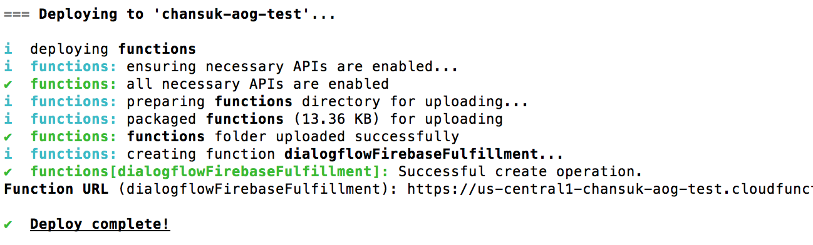
Inline Editor 대신 Webhook 옵션을 활성화하고 URL 입력창에 Function URL을 입력합니다.
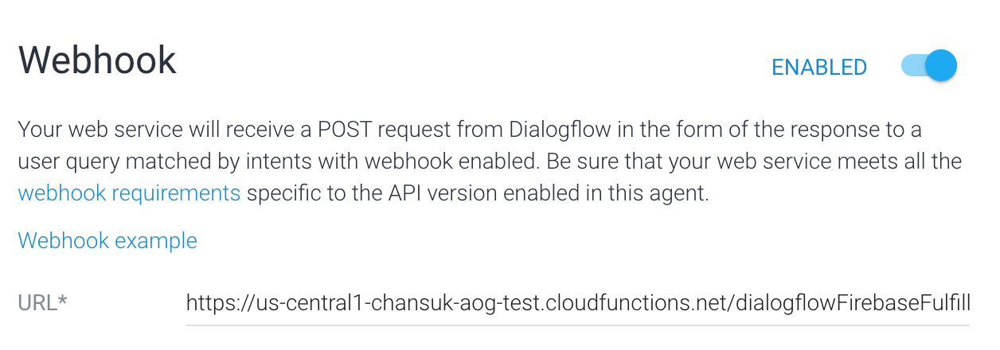
화면 하단의 SAVE 버튼을 눌러 변경 사항을 저장한 후 AoG 앱을 테스트해봅니다. ‘오늘 일정' 액션을 요청했을 때 이전 단계와 동일한 응답을 받을 수 있습니다.
Cloud 함수 로그 확인하기
정확히 어떤 형태로 사용자 요청과 응답이 전송되는지 또한 Cloud 함수가 정상적으로 동작하는지 확인하기 위해 로그를 확인할 필요가 있습니다. Firebase 콘솔에 접속해 앞서 연결한 Cloud 프로젝트를 선택합니다. 왼편 메뉴바의 Develop 부분에서 Functions 메뉴를 고르면 다음과 같이 로그를 확인할 수 있는 대시보드가 표시됩니다.
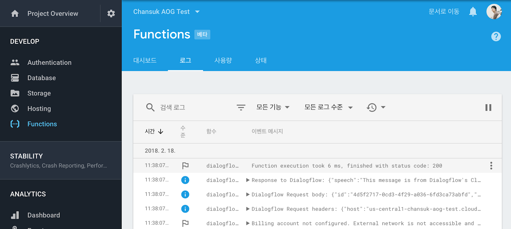
사용자 요청을 처리할 때, 외부 데이터 소스(혹은 웹서비스)의 정보를 활용할 수 있도록 다음과 같이 기능을 확장합니다.
- 사용자가 ‘오늘 일정' 액션을 요청하면, 외부에 저장된 데이터 소스를 참조해 행사 이름을 확인하고 해당 값을 이용해 응답 문장을 구성해 반환합니다.
- 사용자가 ‘행사 정보 추가' 액션을 요청하면, 새로운 행사명을 입력받고 해당 행사를 외부 데이터 소스에 추가합니다.
- 이 후 사용자가 ‘오늘 일정' 액션을 다시 요청하면, 앞 서 추가된 행사 정보가 반환됩니다.
이번 코드랩에서는 Firebase 용 Cloud 함수 내에서 쉽게 활용할 수 있는 Cloud Firestore를 외부 데이터 소스로 활용합니다.
Cloud Firestore 사용 설정
Cloud Firestore는 모바일, 웹, 서버 개발에 사용되는 유연하고 확장 가능한 데이터베이스입니다. 현재 오픈 베타 단계로 Firebase 콘솔에서 확인 후 사용 할 수 있습니다. Firebase 콘솔로 접속 후 Database 메뉴를 선택합니다. ‘FIRESTORE 베타 사용해 보기' 버튼을 클릭해 기능을 활성화 합니다.
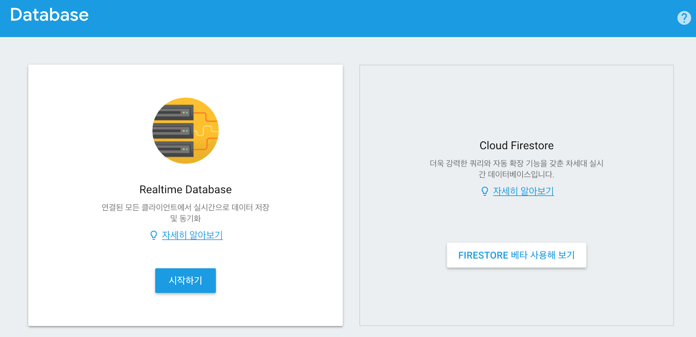
이어서 Cloud Firestore 보안 규칙 선택 팝업 창이 나타납니다. 빠르고 쉬운 개발을 위해 보안 규칙이 적용되지 않는 ‘테스트 모드로 시작' 옵션을 선택하고 ‘사용 설정' 버튼을 클릭합니다.
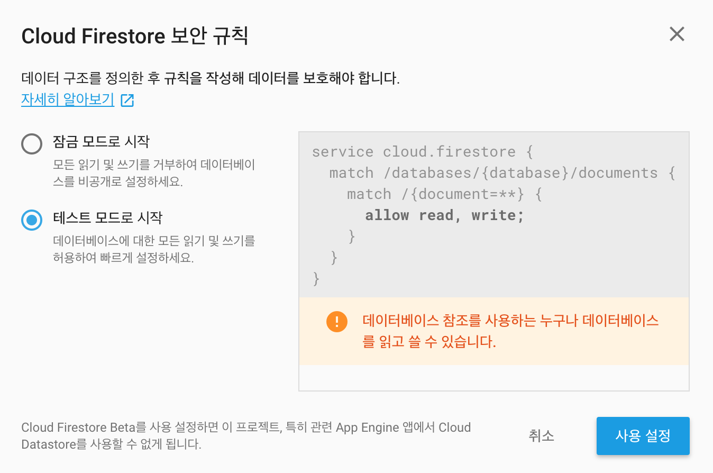
프로비저닝이 완료되면 Firestore내 데이터를 확인하고 추가할 수 있는 웹 프론트 UI가 표시됩니다.
Firestore 데이터 입력
다음으로 웹 프론트 UI 상에서 직접 Firesore에 행사 관련된 데이터를 추가해봅니다. Firestore는 데이터를 ‘문서(Document)' 단위로 저장하며, 데이터를 담고있는 여러 문서를 묶어 ‘컬렉션(Collection)' 단위로 관리합니다. 문서가 담을 수 있는 데이터의 종류는 다양하며 다른 문서들의 집합인 서브 컬렉션을 포함 할 수도 있습니다. 반대로 모든 문서는 반드시 하나의 컬렉션에 속해있어야 합니다.
그럼 먼저 행사 정보를 담은 문서를 보관하기 위한 events 컬렉션을 생성합니다. 그리고 뒤 이어 events 컬렉션에 포함될 첫 번째 문서를 생성합니다.
문서 ID는 다른 문서와 구분되는 임의의 값을 사용할 수 있습니다. 혹은 ID 입력 창을 공백으로 남겨두면 자동으로 ID가 생성됩니다. 첫 번째 문서 데이터에 name 필드를 추가하고 유형을 string으로 선택한 후 적당한 값 (위 예시에서는 ‘구글 코드랩 행사')를 입력합니다. 이 사용자가 ‘오늘 행사' 액션을 요청하면 해당 값을 활용해 요청 응답을 구성하게 됩니다.
‘저장' 버튼을 눌러 데이터를 저장합니다. 이 후, 다음 단계에서 문서의 데이터 값을 불러오기 위해 생성된 문서의 ID 값(아래의 경우 uWf5m~~~)을 기억해둡니다.
Cloud 함수 에서 Firestore 데이터 가져오기
웹 프론트뿐만아니라 Cloud 함수 코드 내에서 Firestore 문서 데이터를 가져올 수 있습니다. 우선 터미널 혹은 쉘을 실행합니다. Cloud 함수 작업을 진행했던 functions 폴더로 이동해 node.js 용 클라이언트 SDK를 설치합니다. 참고로 현재 5.X.X 대의 SDK 최신 버전은 5.9.0 버전으로 해당 버전이 설치됩니다.
npm install --save firebase-admin@^5.9.0
폴더내의 package.json 파일을 확인해 프로젝트 의존성 설정에 firebase-admin이 올바르게 추가되어 있는지 확인합니다.
다음으로 index.js 파일을 수정 해 Firestore의 데이터를 불러오는 코드를 추가합니다. 우선 해당 파일을 열고 firebase-admin 라이브러리를 불러오는 코드를 추가합니다.
// Cloud Functions for Firebase library
const functions = require('firebase-functions');
// Google Assistant helper library
const DialogflowApp = require('actions-on-google').DialogflowApp;
// CODELAB: 아래 코드를 추가하세요
// Firestore 접근을 위해 Firebase Admin SDK를 추가합니다.
const admin = require('firebase-admin');
// 프로젝트 기본 설정을 기반으로 Firebase 앱 Instance를 생성합니다.
admin.initializeApp();코드 상에서 Firestore 접근을 위한 준비가 모두 마무리되었습니다. 이제 Firestore에 저장된 문서 정보를 활용해 사용자 요청을 처리하는 코드를 추가합니다. 필요한 코드는 다음과 같습니다.
- 문서 ID를 키 값으로
DocumentReference를 생성합니다. promise형식의 비동기 호출을 통해 실 데이터가 담긴DocumentSnapshot를 가져옵니다.- 스냅샷을 통해 문서의 필드값은
property형식으로 접근할 수 있습니다. - 비동기 호출이 성공하면 문서 데이터를 가져와 사용자 요청에 대한 응답을 만듭니다.
- 비동기 호출이 실패하면 필요한 예외 처리를 합니다.
그럼 순서대로 진행해 보도록 하겠습니다. 앞서서 ‘input.todayevent'액션을 처리하기 위해 작성한 코드로 이동합니다. 클라이언트를 불러와 특정 컬렉션에 속한 문서 정보를 가져와 지역 변수에 저장하는 코드를 추가합니다.
// CODELAB: 아래 코드를 추가하세요
// '오늘 행사' action intent has been matched
'input.todayevent': () => {
// Firestore 접근을 위해 Firestore 클라이언트를 가져옵니다.
var db = admin.firestore();
var eventName;
// events 컬렉션에 접근해 DOCUMENT_ID의 문서 참조를 가져옵니다.
var docRef = db.collection('events').doc(DOCUMENT_ID);
...이 때 DOCUMENT_ID 부분은 아래와 같이 앞에서 저장해둔 문서 ID 값을 사용하도록 변경합니다.
var docRef = db.collection('events').doc('uWf5m83aQVVPHqKWjOTy')이어서 DocumentSnapshot를 가져오기 위한 비동기 호출을 하고 호출 결과에 따라 적절하게 사용자 요청을 처리합니다.
...
// 문서 참조를 기반으로 실제 문서 데이타를 가져옵니다.
// 해당 작업은 비동기로 수행됩니다.
docRef.get().then(doc => {
if (!doc.exists) {
// 문서 데이터가 없는 경우 행사가 없다는 메세지를 출력합니다.
console.log('No such document!');
sendResponse('오늘은 행사가 없습니다. from webhook with firestore');
} else {
// 문서 데이터에서 name property 값을 가져와 eventName에 저장합니다.
eventName = doc.data().name;
console.log('Document data:', doc.data().name);
// eventName을 사용해 사용자 요청에 응답합니다.
if (requestSource === googleAssistantRequest) {
sendGoogleResponse('오늘은 ' + eventName + '가 있습니다. from webhook with firestore');
} else {
sendResponse('오늘은 ' + eventName + '가 있습니다. from webhook with firestore');
}
}
})
.catch(err => {
console.log('Error getting document', err);
});
}, //'input.todayevent' 구문이 끝나는 지점코드 작성이 완료되었습니다. 터미널에서 다음 명령을 실행해 변경된 Cloud 함수 코드를 배포합니다.
firebase deploy --only functions
배포가 완료된 후 AoG 시뮬레이터 혹은 Dialogflow 시뮬레이터에서 ‘오늘 일정' 액션을 테스트합니다. 다음과 같이 Firestore에 저장된 값이 응답으로 반환됩니다.
Fulfillment 구현의 마지막 단계입니다. 새로운 행사 정보를 등록할 수 있는 액션을 추가하고, 해당 정보를 Cloud Firestore를 통해 저장하도록 Fulfillment를 확장합니다. Dialogflow 상에서 사용자 입력을 받을 수 있는 대화형 액션은 다음과 같은 단계로 구현할 수 있습니다.
1. Dialogflow 상에서 ‘새로운 행사 정보 등록을 요청'하는 액션을 추가합니다.
2. 사용자가 ‘행사 정보 추가할래' 등의 형식으로 정보 등록 요청 액션을 호출합니다.
3. Dialogflow 상에서 액션이 호출되고, 다음과 같은 동작을 수행합니다.
- ‘새로운 행사 이름을 알려주세요.' 처럼 추가적인 사용자 입력을 요청하는 응답을 전달합니다.
- 대화 세션 내에 다음으로 사용자의 추가 입력 (행사명)이 필요한 상태임을 저장합니다. 대화 중의 상태 정보는
context를 사용해 저장 할 수 있습니다.
4. 사용자 입력이 필요한 상태를 나타내는 context가 있는 경우에만 동작하는 액션을 추가합니다. 해당 액션은 다음과 같은 동작을 합니다.
- 사용자가 ‘구글 컨퍼런스 등록해줘' 와 같은 요청을 하는 경우, 사용자 요청 중 ‘행사명(구글 컨퍼런스)'에 해당하는 부분을 파싱해 Firestore로 저장합니다.
- 사용자에게 ‘새로운 행사 정보가 성공적으로 저장되었습니다' 와 같이 요청이 올바르게 처리된 것을 확인하는 응답을 전달합니다.
- 기존
context정보를 초기화합니다.
‘행사 정보 추가 요청' 액션 만들기
그럼 우선 Dialogflow 콘솔의 Intents 메뉴에서 행사 정보 추가를 위한 액션을 새롭게 생성합니다.
예를 들어 사용자 요청과 응답은 다음과 같이 입력할 수 있습니다
Training phrases: | "행사 정보 추가" |
Text response: | "새로운 행사 이름을 알려주세요.' |
다음으로 화면 상단의 Contexts 패널을 확장합니다. ‘Add output context' 입력창에 다음과 같이 저장할 context 정보를 추가합니다. 화면 하단의 SAVE 버튼을 눌러 변경 사항을 저장합니다.
Add output context: |
|
이번 코드랩 단계에서는 out context를 대화 흐름을 제어하기 위한 플래그로 사용합니다. 해당 액션이 호출된 이 후 이루어지는 액션 호출에서는 waiting_for_new_event_name 값이 함께 전달됩니다. 왼편의 숫자 5는 해당 out context의 수명 (life span)을 나타냅니다. 위의 경우 해당 액션 호출 후 5번의 사용자 요청이 추가로 처리된 후에는 context 값이 자동으로 초기화됩니다.
‘행사 이름 입력' 액션 만들기
실제로 사용자에게 새로운 행사 이름을 입력 받는 액션을 생성합니다. 이 액션은 waiting_for_new_event_name context 값이 설정된 경우에만 호출될 수 있어야 합니다. Dialogflow 콘솔의 Intents 메뉴에서 새로운 액션을 하나 추가하고, Intent 이름은 ‘행사 이름 입력' 이라고 지정합니다.
화면 상단의 Contexts 패널을 확장해 다음과 같이 context를 설정합니다. 참고로 Input context는 해당 액션에 진입할 수 있는 context 조건을 나타냅니다.
Add input context: | waiting_for_new_event_name |
Add output context: | x 버튼을 눌러 자동 추가되는 context를 삭제합니다. ‘Contexts will be reset’ 이라고 회색 글씨로 표시됩니다. |
다음으로 사용자가 액션을 호출할 때 사용할 ‘Training phrases' 항목을 추가합니다. 기존 액션과는 다르게 액션 파라미터를 설정하고, 사용자 입력 중 새로운 행사 이름 정보를 파라미터 값으로 가져와야합니다. 다행히 Dialogflow 상에서는 이러한 설정을 비교적 수월하게 할 수 있습니다.
우선 ‘Training phrases' 란에 다음과 같이 행사명 입력을 위한 몇 가지 대표 구문을 입력합니다.
다음으로 '행사 이름은 구글 컨퍼런스'라는 액션을 추가합니다. 아래와 같이 행사 이름에 해당하는 ‘구글 컨퍼런스' 항목을 드래그하여 선택합니다. 다음과 같이 파라미터 설정을 위한 팝업창이 표시됩니다.
해당 팝업에서 파라미터 데이터 타입을 지정할 수 있습니다. 행사 이름에는 특별한 제약 조건이 없습니다. @sys.any 타입은 어떠한 값이든 올 수 있는 형식입니다. 해당 타입을 선택하면 선택 영역의 색상이 주황색으로 변경되고, 아래와 같이 자동으로 파라미터가 추가됩니다. 파라미터의 성격을 명확히 알 수 있도록 PARAMETER NAME 값을 event_name으로 변경합니다.
이 후 다른 대표 구문에서 마찬가지로 ‘구글 컨퍼런스' 항목을 선택하면 다음과 같이 바로 앞서 생성한 @sys.any:event_name 파라미터를 지정할 수 있습니다. 모든 대표 구문에 해당 파라미터를 지정해 둡니다.
새로운 행사명 입력을 위해서는 event_name 파라미터 값이 꼭 필요합니다. 화면 중간의 Action 메뉴 패널을 확장해 파라미터 목록을 확인하고, REQUIRED 체크박스를 체크해 다음과 같이 event_name를 필수 파라미터로 설정합니다.

다음으로 사용자 응답을 입력합니다. 응답 메시지를 구성할 때 위 파라미터의 VALUE 값($event_name)을 참조해 파라미터로 입력된 값을 활용할 수 있습니다. 이를 활용해 다음과 같이 Response를 추가합니다.
Text response: | "$event_name (이/가) 추가되었습니다." |
사용자 입력을 받기위한 액션 구성이 완료되었습니다. 기능이 정상적으로 동작하는지 테스트합니다.
Dialogflow 시뮬레이터 창에 ‘행사 정보 추가' 라고 입력합니다. ‘새로운 행사 이름을 알려주세요.' 라는 응답이 반환되며, waiting_for_new_event_name context가 설정된 것을 확인할 수 있습니다.
뒤 이어 ‘XXXXX 추가' 이라고 입력합니다. Waiting_for_new_event_name context가 초기화되며, ‘XXXXX 가 추가되었습니다.' 라는 응답이 반환됩니다. 이 때 응답 JSON을 확인해보면 parameters 항목에 "event_name" 값이 지정되어 있는 것을 확인할 수 있습니다.
Webhook에서 사용자 입력 확인하기
마지막으로 사용자 입력 파라미터값을 Webhook 코드 상에서 확인하고 이를 Firestore로 저장해봅니다. 우선 Cloud 함수 내에서 ‘행사 이름 입력' 액션을 구분해 처리할 수 있도록 다음과 같이 input.get_eventname 이라고 액션 이름을 추가합니다.
다음으로 화면 하단의 Fulfillment 패널을 확장해 Use Webhook 설정을 활성화 합니다.
SAVE 버튼을 클릭해 변경 사항을 저장합니다.
다시 Cloud 함수의 index.js 파일을 엽니다. actionHandlers 구현에 input.get_eventname액션을 처리하기 위한 코드를 추가합니다. 사용자가 입력한 파라미터 값은 처음 사용자 요청을 파싱한 후 parameters에 저장됩니다. 이 후 코드 내에서 parameters의 프로퍼티 형식으로 원하는 파라미터 값을 가져올 수 있습니다.
// CODELAB: 아래 코드를 추가하세요
// '행사 이름 입력' action intent has been matched
'input.get_eventname': () => {
// event_name 파라미터 값을 가져옵니다.
var eventName = parameters.event_name;
if (requestSource === googleAssistantRequest) {
sendGoogleResponse(eventName + '이 추가되었습니다. from webhook');
} else {
sendResponse(eventName + '이 추가되었습니다. from webhook');
}
},터미널에서 다음 명령을 실행해 변경된 Cloud 함수 코드를 배포합니다.
firebase deploy --only functions
배포가 완료된 후 AoG 시뮬레이터 혹은 Dialogflow 시뮬레이터에서 ‘행사 이름 입력' 액션을 테스트하면, 다음과 같이 사용자가 입력한 파라미터가 사용된 응답을 확인 할 수 있습니다.
이제 사용자가 입력한 파라미터값을 Firestore에 저장하도록 기능을 확장합니다. 앞서 작성한 input.todayevent 핸들러 코드와 크게 다르지 않습니다. Firestore 클라이언트를 가져와 지정된 ID의 문서 참조를 불러온 후 set 메서드를 호출해 기존 행사 이름을 덮어 씁니다. 쓰기 작업이 완료되면 사용자에게 적절한 응답을 전송합니다.
// CODELAB: 아래 코드를 추가하세요
// '행사 이름 입력' action intent has been matched
'input.get_eventname': () => {
// event_name 파라미터 값을 가져옵니다.
var eventName = parameters.event_name;
// Firestore 접근을 위해 Firestore 클라이언트를 가져옵니다.
var db = admin.firestore();
// events 컬렉션에 접근해 DOCUMENT_ID의 문서 참조를 가져옵니다.
var docRef = db.collection('events').doc(DOCUMENT_ID의);
// 문서 참조를 기반으로 사용자가 입력한 값으로 행사 이름을 덮어씁니다.
// 해당 작업은 비동기로 동작합니다.
docRef.set({ name: eventName}).then(result => {
if (requestSource === googleAssistantRequest) {
sendGoogleResponse(eventName + '이 추가되었습니다. from webhook');
} else {
sendResponse(eventName + '이 추가되었습니다. from webhook');
}
});
},수정된 코드를 다시 배포합니다. 배포가 완료된 후 AoG 시뮬레이터 혹은 Dialogflow 시뮬레이터에서 ‘행사 이름 입력' 액션을 테스트하면 이전과 동일한 결과를 확인할 수 있습니다. 다만 이번 경우에는 실제 Firestore에 저장된 문서 데이터 값이 변경됩니다. 코드 동작을 테스트하기 위해서는 다음과 같이 Firebase 콘솔에서 문서 데이터를 직접 확인할 수 있습니다.
혹은 Dialogflow 시뮬레이터에서 ‘오늘 일정' 액션을 테스트하면 다음과 같이 새롭게 변경된 값으로 응답이 오는 것을 확인할 수 있습니다.

축하합니다! 준비된 코드랩의 모든 과정이 완료되었습니다. 이번 코드랩 과정을 통해 Actions on Google 플랫폼 위에서 어스시턴트 앱을 만들 때 필요한 기본적인 요소들을 한 번씩 살펴보았습니다.
- Actions on Google 플랫폼위에서 어시스턴트 앱을 생성했습니다.
- 주요 대화 흐름을 Dialogflow를 활용해 작성했습니다.
- Firebase 용 Cloud 함수를 활용 백엔드 서비스를 구축했습니다.
- 외부 데이터 소스로 Firestore와 Cloud 함수를 연동했습니다.
- 사용자 입력을 받아 이를 저장하고, 입력된 결과를 응답에 활용하는 코드를 구현하였습니다.
이제 Android Things 기반의 Google 어시스턴트, Android 스마트폰, 어시스턴트 시뮬레이터 상에서 여러분의 어시스턴트 앱을 테스트해세요. 그리고 새로운 아이디어를 더해 여러분만의 어시스턴트 앱을 만들어 보세요!! 새로운 어시스턴트 앱은 언제나 환영입니다!
개인 정보 보호를 위해 설치된 앱을 삭제해주세요.
마지막으로, 코드랩을 마무리하기 전에 Android Things 개발 킷을 반납해야합니다. 개발 킷 반납전에 현재 설치되어 있는 앱을 삭제하는 것을 잊지마세요!! 터미널을 열고 다음 adb 명령어로 Android Things에 설치 된 샘플 앱을 삭제합니다.
$adb uninstall com.example.androidthings.assistant